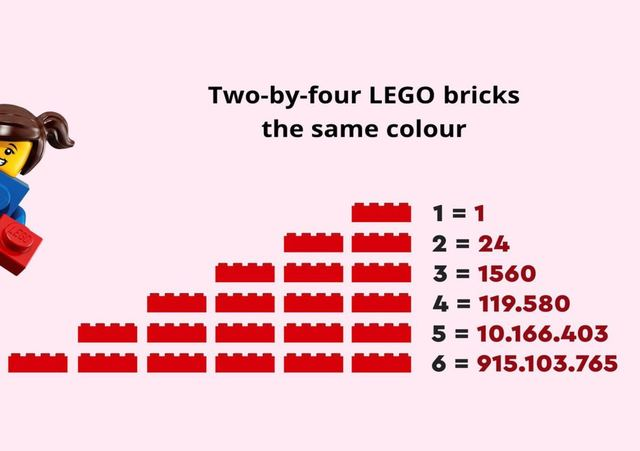

COMBINATORICS · ESSAY NO. 09
A Deep Dive into the Possibilities of LEGO
A combinatorial investigation into the number of ways in which a small set of LEGO bricks can be combined.
4pages
~8min read
PDFformat
